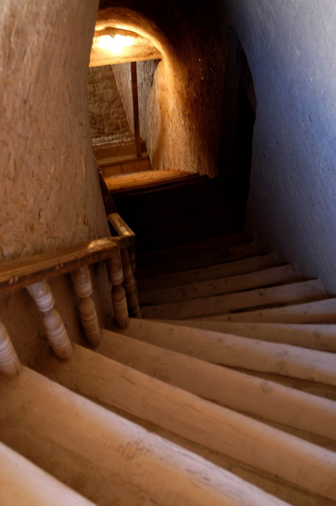
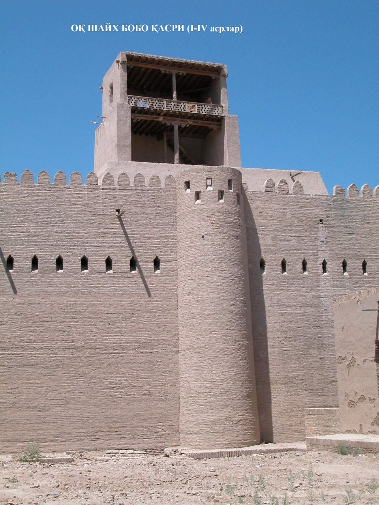

"OQ SHAYX BOBO TEPALIGI"
1. Me’moriy inshootning nomi:
"OQ SHAYX BOBO TEPALIGI"
2. Me’moriy inshoot tiklangan yil:
VI-VIII asrlarda barpo etilgan
3. Me’moriy inshoot joylashgan manzil:
Xiva shahri hududidagi Ichan Qal’a devori bo‘ylab joylashgan.
4. Me’moriy inshootning qurilish materiallari:
Xom g‘isht, paxsa - guvala, qum, alebastr-ganch, yog‘och
5. Inshootning bosh fasadi h.k.lar:


6. Me’moriy inshootning o‘lchamlari
Kvadrat shaklidagi “Oq shayx bobo” tepaligining o‘lchami - 11,5x11,5 m. Bu inshootni barpo etishda kvadrat shakldagi 35-39x35-39x8 sm. xom g‘ishtlardan foydalanilgan bo‘lib, bunday hajmdagi g‘ishtlar Xorazmdagi ilk o‘rta asr inshootlarining qurilishida keng foydalanilgan.
7. Me’moriy inshoot to‘g‘risida tarixiy ma’lumot:
Rivoyatlarga ko‘ra, ushbu obida XIV asrda yashab o‘tgan Shayx Muxtor Valining qadamjosi bo‘lgan. Qal’a ichida bunday mustahkamlangan qo‘rg‘onlarning miqdori qancha bo‘lganligi yoki ular ilk o‘rta asrlar shahrining ajralmas qismi bo‘lganmi, hozircha noma’lum. Bu yodgorlik XVII asr boshlarida qaytadan ta’mirlangan.
Tepalikda saqlanib qolgan ikki qavatli uying xarobalari so‘nggi davrga oid qasrning kuzatuv minorasi bo‘lib xizmat qilgan. Tepalikning ichki xonalarida XIX asrda to‘p quyish ustaxonasi va porox saqlanadigan ombor joylashtirilgan. Bino 1991 yilda qayta ta’mirlangan, hozirda sayyohlar baland ayvon orqali shaharni tepadan tomosha qilish imkoniyatidan bahramand bo‘lmoqdalar.
8. Me’moriy inshootning texnik holati:
10% devor konstruksiyalari ekologik va texnogen ta’sirlar natijasida yo‘qolib ketgan, texnik holati yaxshi.
BOSH SAHIFAGA QAYTISH